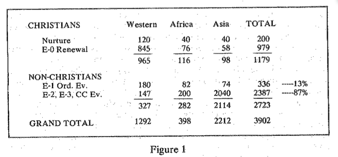
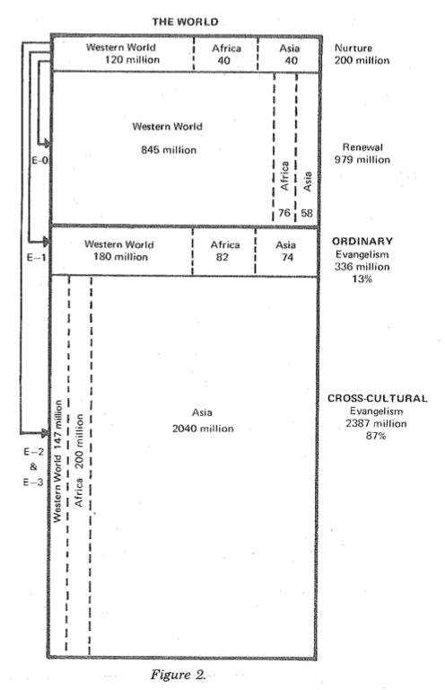
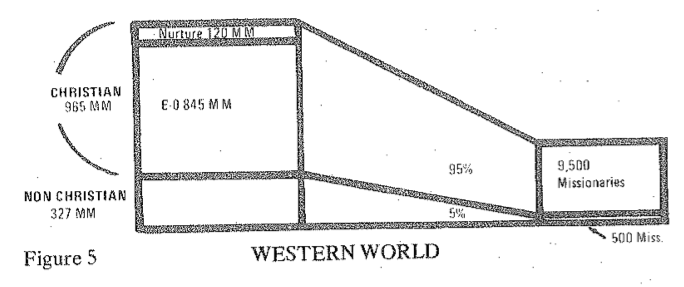
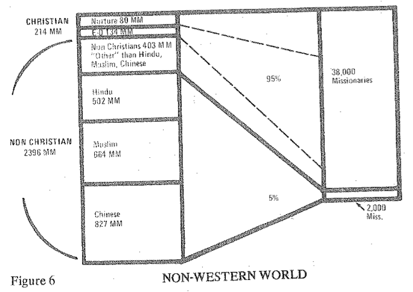

The Highest Priority - Cross-Cultural Evangelism
1974 The International Congress on World Evangelization
Lausanne, Switzerland
Ralph D. Winter
I am deeply grateful to each of these men who have preceded me and for the time they have spent reading my paper and responding to it. I cannot blame them if they did not always understand what I meant. I am sure what I wrote was not entirely clear. In almost no case am I in any disagreement with their emphases. Often they have added things which I would have put in myself had I had more space.
In particular, may I say how very grateful I am to Pablo Perez and Philip Hogan for their emphasis upon the spiritual factors, which in many cases override all others in importance. However, I am sure that they are not trying to say that the presence of the Holy Spirit in our lives does away with the need for any active intellectual analysis. In the headquarters of Dr. Hogan's church in Springfield, Missouri, the Holy Spirit has superintended them in an immense amount of tough thinking and analysis, or they would not be operating the largest printing establishment in the state of Missouri, nor would they have been one of the very first of the mission agencies in the United States to make extensive use of computer facilities. Quite obviously, there is no conflict, rightly understood, between the guidance of the Holy Spirit and the need for careful, patient, analytical thinking.
It is evident that we must not fail to distinguish between what we may expect God to do and what God may legitimately expect us to do. For example, I feel sure that God, if he wished to, would be able by his Holy Spirit to eliminate language differences and merge everyone into a single congregation. But we must respect the fact that the outpouring of the Holy Spirit in the New Testament did not eliminate the Greek language, nor the Greek culture, but in fact allowed an additional Greek-speaking church tradition where there was only a Jewish church before. There may have been many Jewish Christians who fervently wished the Greeks would follow their form of worship, but God apparently had other plans.
Dr. Perez has helpfully stressed the fact that the Gospel changes human cultures; it does not merely yield to them. He, of course, is speaking within a culture as an E-1 evangelist. This is the proper attitude. But if Dr. Perez were to go to a foreign country to a new situation, he would then be in a different situation, and would have to be very respectful of the culture and not fight against it as he knows how to do within his own culture. I, for example, in my own ministry in a foreign situation, had to learn to respect and not to fight much of the aboriginal culture lest I myself confuse my culture with the Gospel.
Now in regard to Dr. Loewen's paper, one of the misunderstandings which we discovered only yesterday afternoon is that my use of the phrase "near-neighbor evangelism" is confined to the E1 sphere, whereas he is taking it to mean E-1 and H-2. If I were to mean what he meant by the phrase, then I would come out with the same statements that he has, which naturally reduces the proposal that "four out of five non-Christians are beyond the reach of near-neighbor evangelism." I also appreciate very much the fact that he has underscored the great complexity of E-3 evangelism. As an anthropologist, he seems almost to say that witnessing to totally strange people is so difficult that it ought not to be attempted. I would agree except to add the provision that E-3 evangelism, however difficult it may he, must be attempted at all costs where there is no reasonable possibility of effective E-1 and E-2 evangelism, There are, as an example, hundreds of thousands of Christians in Ethiopia today who would not know Christ, and who would not have the Bible, had evangelical Christians from other lands stayed home and simply insisted that the local Coptic church should do the job. In Ethiopia and in countless other situations, both in the past and in the future, B-1 and B-2 evangelism is not a viable option, and in that case the extraordinarily difficult E-3 distance must be traversed by someone who is obedient to that level of hazard and difficulty which Dr. Loewen so rightly underscores.
For these reasons, therefore, I feel I must applaud the plans being laid by David Cho and others in Asia for 100 Asian missionaries to go to that at great island of Kalimantan. This will surely speed up, not hinder, World evangelization. And. there is still another island, the world's largest called New Guinea. In the western half alone, indeed in just the immense swampy southern section of the western half - a swamp so large that someone said the largest swamp in Florida looks like a phone booth by comparison - there are 380 tribal languages in which the Gospel is not yet preached. Only with bold planning and prayerful obedience will these people soon be reached for Christ, but we cannot expect near-neighbor evangelism of any type to reach them in this century. If Korean missionaries can join forces there with the present tiny crew of Western agencies, this will be a splendid example of East~West partnership in a new modern era of cross-cultural evangelism.
1 might add that there are other reasons for E-3 contacts being maintained even after a church is born. One is the need we all have for what Rene Padilla called "cross-fertilization." E-3 is maximally tough but it is maximally stimulating. God has not meant for his world family to persist in cultural ghettos. He has not intended, on the one hand, to merge the whole family into a single culture. On the other hand, he does not want ghettos. The body of Christ can be healthy only if there are separate organs, and the separate organs serve each other. The two-way flow of E-3 personnel is a most important phenomenon which must increase not decrease in the life of the world Christian family.
Let me now turn to the many hundreds of responses I have received from other participants in the Congress. I deeply value and intend in Save every one of your papers that came to me. Practically all the questions either concerned the statistical scope of the task or the theological nature of the task,
Questions about the statistical scope of the task
Let us consider first the scope of the task. Figure 1 is an attempt to sum it up. Jesus said that no man builds a tower without first sitting down and calculating the cost: Here at this Congress we must sit down and assess the task of world evangelization.
Note that the numbers above are all in millions of people in the world today. You will see I have first divided between those who call themselves Christians and those who do not call themselves Christians, and you will see in the column on the far right that the total number of Christians is 1179 million, and the total number of non-Christians is 2723 million.
I want you to think for a moment about this latter number - 2700 million. Do you notice that this is about one million people for each participant in this Congress? [This means that if each of you all had been busy and had won a million people on your way here, we would have been able to disband the Congress!) These two numbers, 1179 and 2723 are, of course, not precise counts except at a certain date - since the population clock tells us such numbers are constantly changing. For example, the number of Christians, 1179 million, is increasing by 70,006 each day we are gathered here. If, we had an evangelism clock in addition to a population clock, it would register the number of additional Christians each minute for example, from the opening of this Congress until new, four days later, the number of Christians in the world has grown more than a quarter or a million. If we had a really sophisticated clock, we could even record the fact that each day in practically every country of the world, the percentage of Christians is also increasing. I add these comments lest anyone shrink from the task of evangelizing the massive numbers of non-Christians in Figure l. I don't want you to wonder if there is any hope of being successful in world evangelization. Dear brothers and sisters, we are being successful right now, and we surely have no statistical reason not to make definite plans here at this Congress to move ahead with Jesus Christ, Lord of History, to finish the task of world evangelization.
In other words, the numbers in the last column are only apparently static. They do not show the fact that we are constantly gaining in the Christian percentage in all columns, that is, in the Western World, in Africa, and in Asia. (Australia and Latin America are included in the Western World; the Pacific I am including in the Asia column.)
You will now note that both the-Christian and the non-Christian populations have been further divided. The Christian group is divided into the committed Christians, who need nurture; and nominal Christians, who need renewal. Then the non-Christians are also divided in-two groups, this distinction being the heart of my whole presentation: those who can be reached by ordinary, near-neighbor evangelism (which I have called E-l evangelism); and those who are beyond a significant cultural frontier, whom we can only reach by cross-cultural evangelism, that is, who may wish to exercise their biblical right to self-determination in establishing a separate cultural tradition of regular worship and fellowship. In a word, they are people at a sufficient cultural distance so that we cannot necessarily expect them to join existing Christian churches. Their existence calls for special cross-cultural evangelism, and constitutes the major technical obstacle to world evangelization.
In Figure 2 you see the quantities and distinctions mentioned in Figure 1 now visualized with the spaces drawn to scale. For example, the four numbers down the right side of the large vertical rectangle - 200, 979, 335, 2387 - are the same numbers we have just seen in the last column of Figure 1. The first two numbers are those who call themselves Christians, requiring nurture and renewal. Then you'll notice a dark line running across the rectangle, and the two categories below this line are the non-Christians -the 336 million who can he reached by the ordinary evangelism of Christians reaching out to their cultural near~neighbors, and 2387 million who are not within the range of the ordinary evangelism of any Christian congregation - people who require cross cultural evangelism (E2 or E-3}. Note that according to these estimates, 87 per cent of the non-Christians are in the cross-cultural category. Before leaving this diagram, note that most of the people needing renewal are in the Western World, while the people needing cross-cultural evangelism are mainly in Asia. This fact helps to account for the instinctive difference between the way most Western Christians think about evangelism and the way people involved in cross-cultural evangelism think about evangelism.
Now let's look at Figure 3. Here you see a small triangle representing the Christian community, from which four arrows emerge. One arrow, labeled E-0, is aimed into a sector within the Christian community. This is the winning of nominal Christians to personal faith and commitment - the "evangelical experience." This E-0 evangelism involves just as much a spiritual experience as E-1, 13-2, or E-3 evangelism, but there is no cultural distance involved - hence the zero. The arrow labeled E-1 goes out of the church into the culture within which the church is at home, the only barrier being the "stained-glass barrier" between the church and the world. People in this area, if converted, will feel at home in existing churches. However, the B-2 arrow reaches outside this culture into a similar culture that is nevertheless sufficiently different to make the founding of separate congregations desirable to act as a base for effective outreach to others in that same culture. The B-3 arrow involves similar church-planting implications, but reaches out to a totally strange culture (the circle).
I hope this doesn't seem too complicated. It is a help when looking at any country or region of the world to size up the situation by making a rough estimate of the number of people in each of these five categories which the diagram in Figure 3 gives us: First, there are the committed Christians (shaded area) who are the only active agents you can count on to do the work. Next there are the four kinds of people who are not committed Christians and who are either at a O, 1, 2, or 3 cultural distance away from the committed Christians. Following this scheme, you can divide the people in a small town into these five categories. Or you can make estimates of the number of people in these five categories for a whole country. This seems to be helpful to size up the task.
I have done this by way of example in the diagrams in Figure 4. The first three diagrams are for three different sections of the non-Western world, where from left to right there is a progressively greater number of committed Christians. (in these diagrams I have not distinguished between the B-2 and E-3 areas because they are both cross cultural evangelism and therefore usually require founding new churches.) The fourth diagram - the Western World - shows the close comparison between the South Pacific and Western World. In both cases a high proportion of the people are at least nominal Christians, and this means the need for cross-cultural evangelism internal to the regions may not seem so important to people in these areas.
On the other hand, India and Nigeria are more typical of all the rest of the world, and that is why cross-cultural evangelism is of the highest priority in the non-Western world. Let me repeat that although there are a lot of Christians in india, this must not obscure the fact that most of the people in India are at a cross-cultural distance from any Christian congregation whatsoever.
In Figure 5 and 6, unlike in the table in Figure 1, we have divided the total world population first into Western and non-Western spheres. in Figure 5 you'll notice the statistics from the first column of the earlier table, where the Western world is divided between Christian and non-Christian - 965 million Christians and 327 million non-Christians. Note that the 10,000 missionaries working in the Western world (mainly Europe, North America, Latin America) are focusing almost all of their efforts on the nominal Christian sphere while only a fairly small percentage, according to my estimates, are really concentrating on people who do not consider themselves Christians (E~1, E~2, and E-3). This is not surprising, because the majority of Westerners are nominal Christians. Things are very different in the non-Western world, as we see in Figure 6. There for simplicity we have divided all the hon-Christians into four groups - Chinese, Muslim, Hindu and "other." 'The bottom three layers represent three virtually untouched blocs of humanity, amounting to 1933 million people.
Let us think prayerfully for a moment about these three groups. A few minutes ago we noted that there are roughly one million non~Christians in the world for each participant here. If our Congress participants consisted of people whose gifts and calling-were focused proportionately on all non-Christians in the world, would we not have to have here one participant for each million in each of these groups? This means we would have to have 502 people here specializing on reaching the 502 million non-Christian Hindus. These would have to be cross-cultural specialists, on the whole. We would also have to have 664 people here specializing on reaching the 664 million Muslims. They too would have to be almost entirely cross-cultural specialists, since only tiny numbers of Muslims can be won by local Christians living in their areas who try to reach them by ordinary evangelism. (Parenthetically, let me observe that the Muslim group, which is already immense, is growing at a biological rate almost double that of the Chinese, and that if present rates continue, there will be more Muslims than Chinese within about ten years. Moving on to the Chinese, proportionately to represent the 827 million non-Christian Chinese would require at this Congress 827 people specializing on the task of reaching them. In the case of the Chinese there are millions of Christian Chinese to help in the task. But even so, the Chinese are so split up by dialects, social distinctions, and highly significant clan differences that most of this task is E-2 rather than E-1, and thus mainly a cross-cultural problem as with the other two major blocs.
Now note something very significant. As in the case of the Western world, most of the cross-cultural workers are focusing their efforts on nurture and E-0 evangelism connected with the Christian community. The number of Christians in the non-Western world (214 million) is the sum of the Africa and Asia columns in the previous table, that is 116 + 98. Again by merging the columns, there are 80 million committed Christians in the non-Western world, whose nurture soaks up a very large proportion of the energies of both Christian missionaries and national church leaders; there are also 134 million nominal Christians who take up practically all of the rest of the efforts. It is only a guess, but it is safe to say that 95 percent of all missionaries deployed in the non-Western world are focusing their efforts either on communities that c1aim to be Christian or upon non-Christian peoples in the immediate environment of the Christians, these latter probably being mainly the 403 million non-Christians in the other category in this chart. That leaves only a tiny percentage of cross-cultural workers to deal with the three major blocs of non-Western non-Christians. Brothers and sisters, this is a grim picture. The task to be done on the left is big enough, but precisely where the cross-cultural task is the largest, the cross~cultural Workers are the fewest.
For example, the number of effective evangelists winning middle caste and upper case Hindus (well over 400 million people) are very few indeed, and the number of effective cross-cultural evangelists winning Muslims are very few indeed. While there may be proportionately more cross-cultural workers who are reaching out to non-Christian Chinese, these would mainly be in Taiwan. But even in Taiwan most missionaries and national leaders are absorbed with the needs of the Christian community. This is not to begrudge the "inter-church" exchange of E-3 workers. the danger is that we may easily deceive ourselves concerning the proportionate weight of personal that is going to the evangelism of non-Christians. This is so important to understand that we must use an extended illustration of this whole matter of the statistical scope of the task of cross-cultural evangelism. Since I have already said a good deal in my original paper about Pakistan, let me build on that situations.
The rough proportions in Pakistan are similar to the diagram in Figure 4 in India. In Pakistan there are proportionately fewer Christians than in India, but they number well over one-half million (out of 70 million). The Christian community today is the product of a great people movement and spiritual revival over a half-century ago, but there are very few people living today who were brought to Christ in that movement, and the churches of Pakistan by now have a sizable proportion of their own members who need to be won by E-0 evangelism to personal spiritual obedience to Christ. The really surprising thing is why the E-1 sphere is so small. A country of 70 million people where there are 500,000 Christians does not on the face of it seem likely to be a place where near-neighbor evangelism would have relatively small significance. Why can't the 500,000 Christians just reach out to their near neighbors and win them to Christ? This is the crucial question. The answer is that 99 per cent of the Christians have a Hindu (not Muslim) cultural background, Whereas 97 per cent of the non-Christians in Pakistan are Muslim. In the north you have scattered communities of Christians (just as in India, most Christians are in separated, isolated areas, almost like ghettos), but their physical separation from so many of their countrymen does not remotely approach the significance of their cultural isolation.
Thus, from the beginning of the revival movement in the north over fifty years ago until the present time, almost never has a Muslim joined a Christian church, while hundreds of thousands of former Hindus have become Christians. Although the church in Pakistan has a large E-0 population of nominal Christians, it is continuing to win some remaining Hindus to Christ through E-1 evangelism. On this basis, how soon will the church run out of Hindus to convert? In the northern-part of the country, where most of the Christians are. practically all of the non-Muslim people of Pakistan are already at least nominally Christian. Curiously, there are almost a million people of Hindu background yet to win, but they are in the South, hundreds of miles from the main body of Christians. While it would be relatively simple for these Christians to do evangelism in the South {only a geographical distance away), the Christians are very, very distant from their Muslim neighbors. Why? Because there is a very pronounced cultural distance between the cultural tradition represented by the church and the cultural tradition represented by the Muslims.
Let us be more specific. Both Muslims and the (Hindu-background} Christians in the North speak Urdu. But they don't speak exactly the same kind of Urdu. A Muslim can tell either by listening or by reading that the religious language of the Christians comes from the originally Hindu minority in his country, and he has monumental prejudices about this difference. The Christians, on the other hand, while they don't hate the Muslims, don't feel it is necessary to make a special translation of the New Testament into the religious language of the Urdu speaking Muslims, even though there are more than 30 million Urdu speaking Muslims alone! Feelings of suspicion between the two communities are so great that an occasional Muslim convert does not feel at home in any of the Christian congregations. Christians have not yet made an effective effort nor even drawn up speculative plans for the development of worshiping communities drawn wholly from the Muslim tradition. This is only natural, in a way, because the Christians come from a stratum of society which has for centuries been impoverished and virtually enslaved. The Christians even yet are barely struggling to their feet economically. Their resources, their education, their evangelistic imagination does not readily stretch to radically new ways of evangelizing the Muslims - especially not to ways that will allow the Muslims the kind of liberty in Christ which the Gospel guarantees them.
The situation in Pakistan both illustrates the immense scope of the need for cross-cultural evangelism, and also moves us into the theological dimension of the problem. To that dimension we must now turn.
Questions about the theological nature of the task
First briefly let me say a word to those who asked, in effect, "Will not the allowance of indigenous life ways lead. us into syncretism?" Michael Green has already answered this for us in his excellent discussion of flexibility without syncretism. I might add a personal note that as a Western Christian, I grew up without realizing that Easter Sunrise services could easily revert to their original paganism if Christians attending them do not see and sense a Christian meaning in them. The very word Easter comes from a Teutonic spring goddess of fertility called Eastre. The same is true of Christians. We have all fought to maintain Christ in Christmas, since Christmas is also originally a pagan holiday taken over by the early church. (Romans gave gifts to each other on December 25th long before Jesus was born and for that matter, Jesus may have been born in June, not December.) Briefly, in employing pagan words and customs, we must be careful to make sure that the whole counsel of God is constantly taught and understood.
The main theological question, raised more often than any other, is so profound that I feel I must devote my remaining time to it. The question was stated in many ways in your response papers, but it is basically this: "Will not our unit in Christ be destroyed if we follow a concept of cross-cultural evangelization which is willing to set up separate churches for different cultural groups within the same geographical area?" It is only humble dependence upon the Holy Spirit to honor the Word of God above the secular influences to which we all are subject that I dare to proceed with a perspective which I myself could not understand nor accept until several years ago. I was brought up in the United States, where for many people integration is almost like a civil religion, where such people almost automatically assume that eventually everyone will speak English and really shouldn't speak any other language. To me cultural diversity between countries was a nuisance, but cultural diversity within a country was simply an evil to be overcome. I had no thought of excluding anyone from any church, (and I still do not), but I did unconsciously assume that the best thing that could happen to Black, White, Chicano, etc., was that they all would eventually come to the White, Anglo-Saxon, Protestant church and learn to be things the way that I felt was proper.
Following this kind of America culture-Christianity, many missionaries have assumed that there ought to be just one national church in a country - even if this means none at all for certain sub-groups? Such missionaries, in all earnestness, have assumed that the denominational pluralism in their own home country is simply a sin to be avoided. They have assumed that Southern Baptists aren't necessary in Northern India, even though, as a matter of fact, in Boston today most of the Anglo churches have been sitting around waiting for the Arabs and the Japanese churches, and Portuguese churches, and Greek churches, and Polish churches, right under the nose of hundreds of good-willed Anglo churches which have been patiently waiting for these people to assimilate to the Anglo way of life. With one of two fine exceptions, the Anglo churches, with all their evangelistic zeal, simply do not have the insight to do this kind of E-2 and E-3 evangelism.
For my own part, after many years of struggling with this question, I am now no less concerned than before about the unity and fellowship of the Christian movement across all ethnic and cultural lines, but I realize now that Christian unity cannot be healthy if it infringes upon Christian liberty. In terms of evangelism, we must ask whether the attempt to extend, for example in Pakistan, an external form into the Muslim culture is more important than making the Gospel clear to such peoples within their own culture. Can we not condition our desire for uniformity by an even greater desire for effective preaching of the Gospel? I personally have come to believe that unity does not have to require uniformity, and I believe that there must be such a thing as healthy diversity in human society and in the Christian world church. I see the world church as the gathering together of a great symphony orchestra where we don't make every new person coming in play a violin in order to fit in with the rest. We invite the people to come in to play the same score - the Word of God - but to play their own instruments, and in this way there will issue forth a heavenly sound that will grow in the splendor and glory of God as each new instrument is added.
But some of you have said, "OK, if that is what you mean, what about the Apostle Paul? Did he set up separate congregations for masters and slaves?" I really don't know. I don't think so. But that does not mean that didn't happen. In a recent monograph by Paul Minear entitled The Obedience of Faith, the author suggests that in Rome there were probably five separate congregations of Christians, who numbered 21 total 3000, and that Paul's letter to the Romans was written actually to a cluster of churches in the city of Rome. He also suggests that these churches were very different from each other, some being composed almost entirely of Jewish Christians, and others (the majority) almost entirely of Gentile Christians. "Instead of visualizing a single Christian congregation, therefore, we should constantly reckon with the probability that within the urban area were to be found forms of Christian community which were as diverse, and probably also as alien, as the churches of Galatia and those of Judea." But whatever the case in Rome, Paul in his travels was usually dealing with the phenomenon of house churches, where whole households, masters and slaves, quite likely worshiped together. We cannot believe he ever separated people. However, we do know that he was will- ing to adopt in different places a radically different approach, as he put it, "for those under the law and for those not under the law." When, for example, he established an apparently non-Jewish congregation among the Galatians, it was obviously different, perhaps radically different from that of the Jewish congregations elsewhere. We know this because Jewish Christians followed Paul to the Galatians and tried to make them conform to the Jewish Christian pattern. Galatia is a clear case where it was impossible for Paul to submit simultaneously both to the provisions of the Jewish Christian way of life and at the same time to the patterns of a evidently Greek (or perhaps Celtic) congregation.
Paul's letter to the Galatians, furthermore, shows us how determined he was to allow the Galatian Christians to follow a different Christian lifestyle. Thus while we do not have any record of his forcing people to meet separately, we do encounter all of Paul's holy boldness set in opposition to anyone who would try to preserve a single normative pattern of Christian life through a cultural imperialism that would prevent people from employing their own language and culture as a vehicle for worship and witness. Here, then, is a clear case of a man with cross-cultural evangelistic perspective doing everything within his power to guarantee liberty in Christ to converts who were different from his own social background.
This same thing is seen when Paul opposed Peter in Antioch. Peter was a Galilean law who was perhaps to some extent bi-cultural. He could have at least been able to understand the predominantly Greek lifestyle of the Antioch church. Indeed, he did seem to fit in until the moment other Jewish Christians came to the door. At this point Peter also discovered that in a given situation he had to choose between following Jewish or Greek customs. At this point he wavered. Did he lack the Spirit of God? Did he lack the love of God? Or did he fail to understand the way of God's love? Peter did not question the validity of a Greek congregation. Peter had already acknowledged. this before his Jewish compatriots walked in the door. The point was that Peter was pained for others to know him as one who could shift from one community to the other. What this means to us today is quite clear. There were in fact in the New Testament period two significantly different communities of believers. Peter was regarded the apostle to the circumcision and Paul to the uncircumcision. Peter identified more easily with the Jews, and no doubt had a hard time explaining to Jews his experience at Cornelius' household, namely his discovery that Greek congregations were t.o be considered legitimate. Paul, on the other hand, was able to identify more closely with the Greek congregations. They were perhaps eventually his primary missionary target, even though in a given locality he always began with the Jews.
One clue for today is the fact that where Paul found some Christians to be over scrupulous about certain foods, he counseled people in those situations to abide by the stricter sensibilities of the majority. However, it is always difficult to make exact parallels to a modern situation. The New Testament situation would compare more easily to modern India today were it the case that the only Christians in India were Brahmins (and other members of the middle castes) with their highly restrictive diet. Then we would envision Brahmin Christians finding it hard to allow the less restrictive meat-eating groups to become Christian; but the actual situation is very nearly the reverse. In India today it is those who eat meat who are Christians, and the problem is how to apply Paul's missionary strategy to this situation. In regard to food restrictions, it is as though the Brahmins are "under the law," not the present Christians. In this situation can we imagine Paul saying, "To those under the law I will go as under the law if by all means I may win some"? Can we hear him say as an E-2 or E-3 evangelist, "If meat makes my brother offended, I will eat no meat"? Can we hear him defending worshiping groups among the Brahmins against the suggestion or expectation. that they should change their diet or join congregations of very different lifestyle in order to be accepted as Christians? Against the accusation that he was dividing the church of Christ, can we hear Paul insist that "in Christ there is neither Jew nor Greek, low caste or high caste"? Is this not the actual force of his oft-repeated statement that these different "kinds of people following their different cultural patterns, are all equally acceptable to God? Was he really announcing a policy of local integration, or was he insisting on the equality of diversity?
Note very carefully that this perspective does not enforce (nor even allow) a policy of segregation, nor any kind of ranking of Christians in first and second class categories. it rather guarantees equal acceptability of different traditions. It is clear-cut apostolic policy against forcing Christians of one life-style to be proselytized to the cultural patterns of another. This is not a peripheral matter in the New Testament. True circumcision is of the heart. True baptism is of the heart. It is a matter of faith, not works, or customs, or rites. In Christ there is freedom and liberty in this regard - people must be free either to retain or abandon their native language and life-style. Paul would not allow anyone to glory either in circumcision or in uncircumcision. he was absolutely impartial. He was also widely misunderstood. Paul's problem ultimately was in gaining acceptance by the Jews, and it was Asian Jews, possible Christians, who pointed him out in the temple and thus finally caused his martyrdom for his belief in the separate liberty of the Greek Christian traditions. Let no one who seeks to be a missionary in the tradition of the Apostle Paul expect that working between two cultures will be easy to do. But he can take heart in the fact that the hazards of the profession are more than justified by the urgent missionary purposes of the cross-cultural evangelist.
If, for example, a cross-cultural evangelist encourages members of a Brahmin family to begin worship services in their own home, does he insist that they invite people from across town to their very first meeting? On the other hand, any Brahmin who becomes a Christian and who begins to understand the Bible will soon realize, whether it was entirely clear before or not, that he now belongs to a world family within which there are many tribes and tongues - indeed, according to the Book of Revelation (Rev. 7:9), this kind of diversity will continue right down to the end of time. When cross-cultural evangelist allows the development of a Brahmin congregation, he is not thereby proposing Brahmin segregation from the world church. he is merely affirming their liberty in Christ to retain those elements of their life-style that are not inimical to the Gospel of Christ. he is not increasing their alienation. He is giving them the Word of God which is the passkey to the ultimate elimination of all manner of prejudices, and is already signing them into a world Christian family which embraces all peoples, tribes and tongues as equals.
Now, I regret that this subject is so delicate, and I would not embark upon it if it were not so urgently significant for practical evangelistic strategies which we must have if we are going to win the world for Christ. I would even bring it up. Yet I must say I believe this issue is the most important single issue in evangelism today.
Many people asked me what I meant by strategic value of the establishment of youth churches. It is important to realize the youth situation is highly parallel to the situation we have just discussed, It is by no means a case where we are suggesting that young people not be allowed in adult services. We are not suggesting segregation of the youth. Youth churches are not ends, but means. We are not abandoning the thought that young people and older people should often be in the same service together. We are merely insisting, with what I pray is apostolic intuition, that young people have the freedom in Christ to meet together by themselves if they choose to, and especially if this allows them to attract other young people who would likely not come to Christ in an age-integrated service.
I will, however, freely admit that this strategy may unintentionally make it appear that we are setting aside goals of unity for goals of evangelism. This in fact is not the case. It is quite the opposite: we are willing to do evangelism in the highly divided world in which we live, believing wholeheartedly that in the long run the working of the Holy Spirit through true evangelism is the only way to melt down the high walls of prejudice and thus produce unity where none at all existed before.
Some have warned that this kind of culturally sensitive evangelism will lead to ghetto churches. I suggest rather that it will go to ghetto situations and eventually bring those isolated people into contact with others in a rewarding and enriching way. Where there are already ghetto churches all around the world that are isolated from their neighbors, this may not be the fault of the original evangelists, but of the nurture in succeeding years. if the Gospel begins in a ghetto, it should not end there. Rival street gangs may more easily be brought together by being brought to Christ separately. The initial evangelist does not add a ghetto to the church; he takes the church to the ghetto. People from that ghetto are then automatically present at the next city-wide Christian meeting. The efforts of the Billy Graham Crusades must be seen in this light not as an optional, but as an essential, beautiful, and permanent part of God's ultimate uniting strategy. There must, in fact, be annual city-wide and regional Christian festivals whether or not Billy Graham can personally be there. There must be many other contacts between Christians of all kinds between such annual meetings. Yet we must yield to the fact that God allows the family and the local congregation and even whole denominations to speak different languages and to express their faith in different linguistic and cultural traditions. But woe to such self-determining Christians if this liberty in Christ becomes understood as a basis for superiority or isolation. Why? Because, as Paul said, "In Christ there is neither Greek. nor Jew, nor Barbarian, nor Scythian, nor bond nor free, nor male nor female."
It is a curious fact that the kind of culturally sensitive evangelism I have been talking about has always been acceptable wherever people are geographically isolated. No minds if Japanese Christians gather by themselves in Tokyo, or Spanish-speaking Christians gather by themselves in Mexico, or Chinese-speaking Christians gather by themselves in Hong Kong. But there is considerable confusion in many people's minds as to whether Japanese, Spanish and Chinese Christians should be allowed or encouraged to gather by themselves in Los Angeles. Very specifically, is it good evangelistic strategy to found separate congregations in Los Angeles in order to attract such people? Do Cantonese speaking non-Christians need a Cantonese-speaking congregation to attract them to a Christian faith and fellowship? if you talk to different people, you Will get different answers. In my opinion, this question about evangelistic strategy in forming of separate congregations must be considered as an area of Christian liberty, and is to be decided purely on the basis of whether or not it allows the Gospel to be presented effectively to more people - that is, whether it is evangelistically strategic. Some go as far as granting separate language congregations, but hesitate differences between people are social and non-linguistic. Somehow they feel that people may be excused for meeting separately if their language is different, but that the Gospel urges us to ignore all other cultural differences. Many people are literally outraged at the thought that a local congregation would deliberately seek to attack people of a certain social level. And yet, whole no one should be excluded from any church under any circumstances, it is a fact that where people can choose their church associations voluntarily, they tend to sort themselves out according to their own way of life pretty consistently. But this absolutely must be their own free choice. We are never suggesting an enforced segregation. Granting that we have this rick diversity, let us foster unity and fellowship being that we have this rich diversity, let us foster unity and fellowship between congregations just as we now do between families rather than to teach everyone to worship like Anglo-Americans. Let us glory in the fact that the world Christian family now already includes representatives of more different languages and cultures than any other organization or movement in human history. Let us never be content with mere isolation, but let us be cautious about hastening to uniformity. If the whole world church could be gathered into a single congregation, Sunday after Sunday, there would eventually and inevitably be a loss of a great deal of rich diversity of the present Christian traditions. Does God want this? Do we want this?
Jesus died for those people around the world. He did not die to preserve our Western way of life. He did not die to make Brahmins eat meat. Can't you hear Paul the Evangelist saying we must go to these people within the systems in which they operate? True, this is the cry of a cross-cultural evangelist, not a pastor. We can't make every local church fit this pattern of every other local church. But we must have radically new efforts of cross-cultural evangelism in order to effectively witness to 2387 million people, and we cannot believe that we can continue to ignore this highest priority.